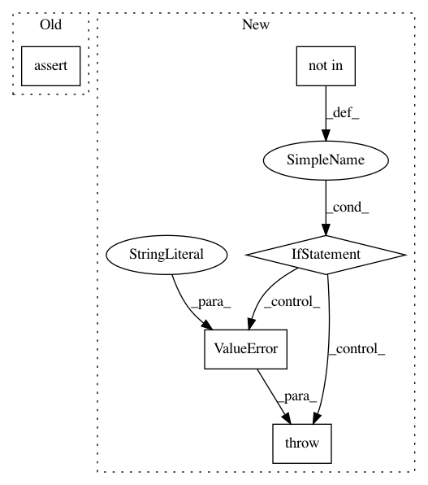

f1cda70a9f60f2a6f9e2f3e80390410274f38172,torchnlp/nn/attention.py,Attention,__init__,#Attention#,15
Before Change
super(Attention, self).__init__()
self.attention_type = attention_type
assert (self.attention_type in ["dot", "general"]), "Invalid attention type selected."
if self.attention_type == "general":
self.linear_in = nn.Linear(dimensions, dimensions, bias=False)
self.linear_out = nn.Linear(dimensions * 2, dimensions, bias=False)
After Change
def __init__(self, dimensions, attention_type="general"):
super(Attention, self).__init__()
if attention_type not in ["dot", "general"]:
raise ValueError("Invalid attention type selected.")
self.attention_type = attention_type
if self.attention_type == "general":
self.linear_in = nn.Linear(dimensions, dimensions, bias=False)
In pattern: SUPERPATTERN
Frequency: 3
Non-data size: 5
Instances
Project Name: PetrochukM/PyTorch-NLP
Commit Name: f1cda70a9f60f2a6f9e2f3e80390410274f38172
Time: 2018-03-16
Author: petrochukm@gmail.com
File Name: torchnlp/nn/attention.py
Class Name: Attention
Method Name: __init__
Project Name: bethgelab/foolbox
Commit Name: bf635f90dae66e4ddd3e1f342dca925b3c99faf7
Time: 2020-02-11
Author: git@jonasrauber.de
File Name: foolbox/attacks/binarization.py
Class Name: BinarizationRefinementAttack
Method Name: __call__
Project Name: danielegrattarola/keras-gat
Commit Name: 69dcf7c5cbc35896bbce390beb41fdd59c9cf42d
Time: 2018-03-15
Author: daniele.grattarola@gmail.com
File Name: keras_gat/graph_attention_layer.py
Class Name: GraphAttention
Method Name: __init__